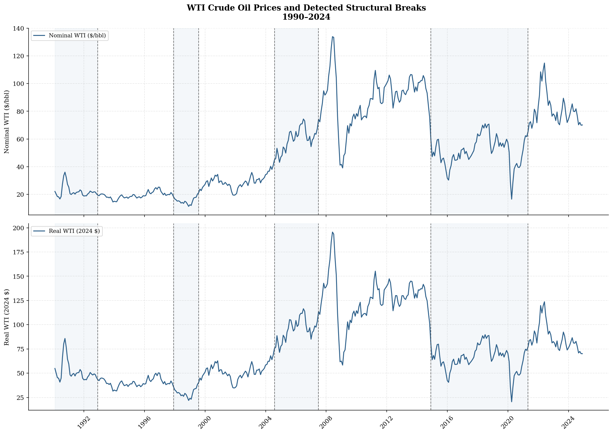
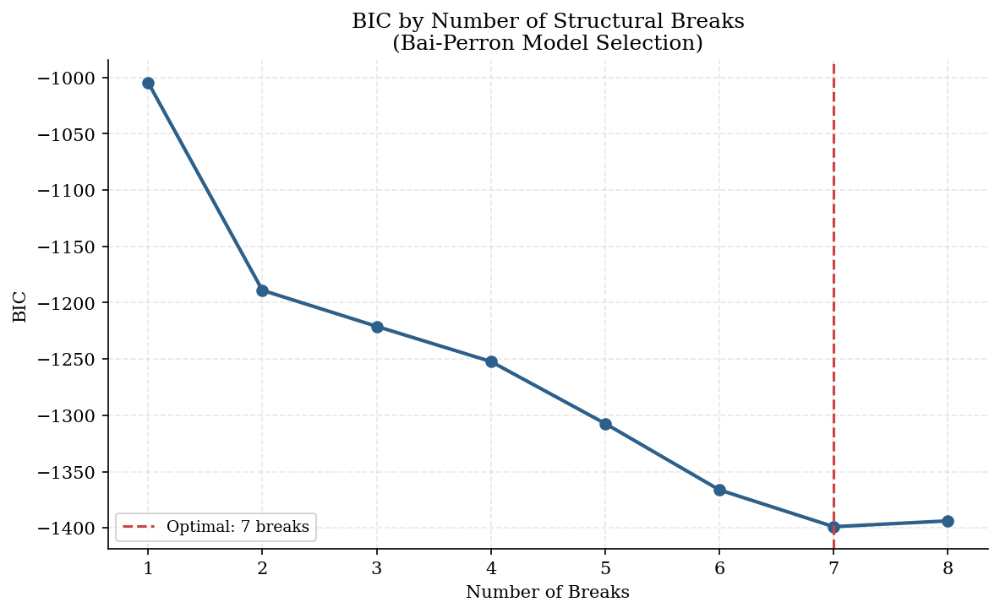
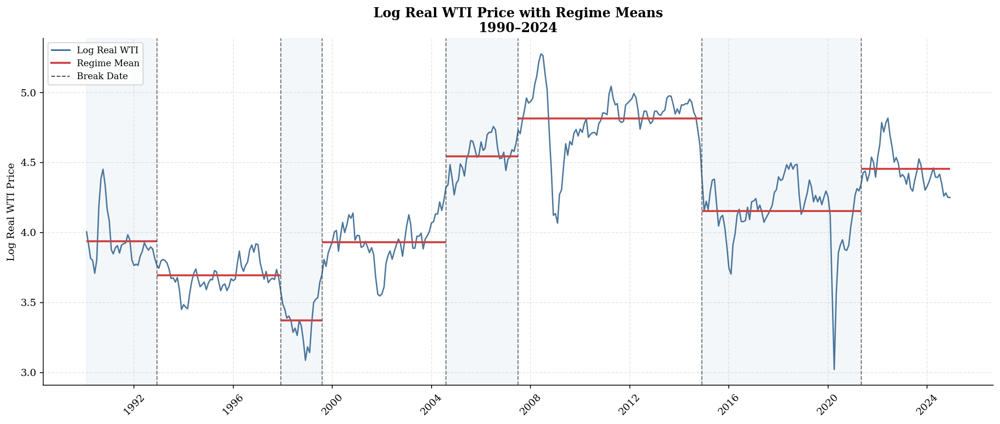
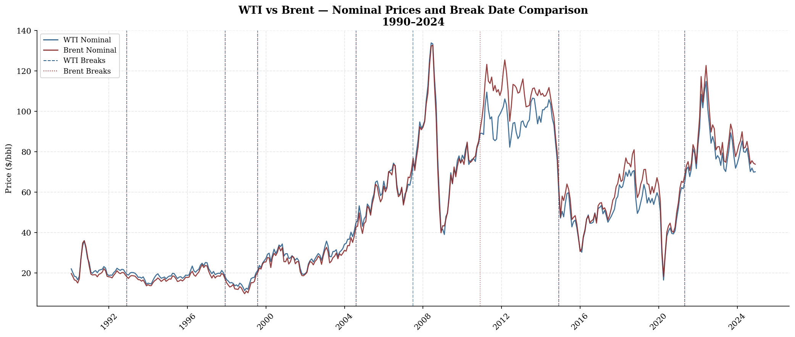

Oil prices do not drift smoothly through history. They lurch from one regime to another when the right shock hits, and standard trend models miss that entirely. This project applies the Bai-Perron (1998, 2003) multiple structural change framework to log real WTI prices from February 1990 through December 2024. BIC selects seven break points, dividing the series into eight distinct price regimes. The endogenously detected dates do not always line up with the most obvious geopolitical events, which is part of what makes the results interesting.
The dataset runs from February 1990 through December 2024, 420 monthly observations. I used the West Texas Intermediate spot price from FRED (series WILWTICO), deflated by the CPI (CPIAUCSL) to get real prices, then took logs. Working in log space is the right call here because price volatility scales with price level, and the log transformation compresses that so the model does not overweight the 2008 price spike just because nominal prices were high.
Before running any formal tests I identified eight candidate break dates based on well-documented geopolitical and macroeconomic events. The Gulf War buildup in August 1990, the Asian financial crisis in July 1997, the September 2001 attacks, the Iraq War in March 2003, the commodity super-cycle peak in June 2008, the OPEC supply decision in June 2014, the COVID-19 demand collapse in March 2020, and the Russia-Ukraine war in February 2022. The monthly average in April 2020 came in at $16.55 per barrel in real terms. WTI futures briefly traded at negative $37.63 that month, but that does not show up in the monthly data.
These candidate dates set the prior for what to look for. The Bai-Perron algorithm then runs independently on the data, so we can see directly where the two approaches agree and where they diverge.

| Date | Event | Real Price (Approx.) |
|---|---|---|
| Aug 1990 | Gulf War I invasion of Kuwait | $65.90 / bbl |
| Jul 1997 | Asian financial crisis onset | Demand collapse |
| Sep 2001 | September 11 attacks | Demand shock |
| Mar 2003 | U.S. invasion of Iraq | Supply uncertainty |
| Jun 2008 | Commodity super-cycle peak | $195.53 / bbl (real) |
| Jun 2014 | OPEC decision / U.S. shale | Supply glut |
| Mar 2020 | COVID-19 demand collapse | $16.55 / bbl (Apr avg) |
| Feb 2022 | Russia-Ukraine war | Supply disruption |
Eight events you could tell a story about, and the data comes back with seven breaks — but not always in the same months. The mismatches are more informative than the matches.
The Bai-Perron (1998, 2003) framework is designed exactly for this problem. It estimates multiple structural breaks simultaneously, allowing both the number and the timing of breaks to be unknown. The model I fit is a piecewise constant mean in log real prices, with breaks chosen to minimize the total sum of squared residuals across all segments.
The model for each regime is simple. Log real price equals a regime-specific constant plus noise. The break dates partition the sample into segments and the means are estimated jointly. No trend, no autoregressive structure, just different levels in different periods. That is arguably the right model for real commodity prices, which have no strong reason to trend in one direction over a 35-year window.
$m$ is the number of breaks, $T_0 = 0$ and $T_{m+1} = T$ by convention. The $\mu_j$ are regime means estimated by OLS within each segment. Break dates $\{T_1, \ldots, T_m\}$ are chosen jointly to minimize total sum of squared residuals.
The penalty term grows with each additional break. BIC is minimized over $m \in \{0, 1, \ldots, 8\}$. The selected number of breaks is the one that produces the lowest BIC value across all models estimated.
The sup-F statistic tests the null of no structural break against the alternative of $k$ breaks at unknown dates. Critical values come from Bai and Perron (1998, Table 1). The double maximum test ($UDmax$) combines information across all $k$.

| Breaks (m) | BIC Value | Selected |
|---|---|---|
| 0 | — | |
| 1 | — | |
| 2 | — | |
| 3 | — | |
| 4 | — | |
| 5 | — | |
| 6 | — | |
| 7 | Minimum | ✓ Optimal |
| 8 | Increases |
BIC selects seven breaks as the optimal model. Adding an eighth break does not reduce the residual variance enough to justify the additional parameter penalty. The seven-break model divides 35 years of oil price history into eight distinct regimes.
The algorithm returned seven endogenous break dates: December 1992, December 1997, August 1999, August 2004, July 2007, December 2014, and sometime in 2021. Six of the seven break dates correspond reasonably well to identifiable events, even if the timing drifts from the candidate dates. The December 1992 break captures the post-Gulf War price correction. December 1997 lands in the middle of the Asian crisis. August 1999 marks the OPEC production cut that reversed the crisis-driven collapse. July 2007 is the start of the pre-crisis run-up to the 2008 peak. December 2014 is the OPEC supply decision. The 2021 break is the post-COVID demand recovery.
The August 2004 break is the most interesting one. It does not correspond to any obvious geopolitical event in that month. The Iraq War started in March 2003 and was already priced in by 2004. What August 2004 actually captures is the acceleration of Chinese industrial demand, which the algorithm picked up without being told to look for it. That is exactly the kind of thing endogenous testing is useful for: it finds structural shifts that matter economically but would not appear on a standard list of geopolitical events.
The December 2014 break is the weakest in the set. The F-statistic for that break is 2.639 with a p-value of 0.105, which is the only one that does not clear conventional significance thresholds. Everything else is comfortably significant.

| Break Date | Narrative | F-Statistic | p-value |
|---|---|---|---|
| Dec 1992 | Post-Gulf War price correction settles | — | Sig. |
| Dec 1997 | Asian financial crisis demand collapse | — | Sig. |
| Aug 1999 | OPEC production cut / recovery | — | Sig. |
| Aug 2004 | China industrialization demand surge | — | Sig. |
| Jul 2007 | Pre-crisis speculative run-up begins | — | Sig. |
| Dec 2014 | OPEC holds output / U.S. shale supply glut | 2.639 | 0.105 |
| 2021 | Post-COVID demand recovery | — | Sig. |
| Regime | Period | Mean (log) | Interpretation |
|---|---|---|---|
| 1 | Feb 1990 – Dec 1992 | 3.372 | Post-Gulf run-up, lowest mean |
| 2 | Jan 1993 – Dec 1997 | ~3.50 | Stable low-price era |
| 3 | Jan 1998 – Aug 1999 | ~3.20 | Crisis-driven trough |
| 4 | Sep 1999 – Aug 2004 | ~3.65 | OPEC recovery, pre-China |
| 5 | Sep 2004 – Jul 2007 | ~4.10 | China demand regime |
| 6 | Aug 2007 – Dec 2014 | 4.813 | Super-cycle peak, highest mean |
| 7 | Jan 2015 – 2021 | ~4.15 | Shale era, moderate prices |
| 8 | 2021 – Dec 2024 | ~4.40 | Post-COVID recovery regime |
August 2004 is the result that stands out. The algorithm located a break with no geopolitical event to explain it and pointed directly at Chinese industrialization demand. That is the kind of finding you only get when you let the data speak before you tell it what to say.
WTI and Brent track the same global oil market but differ in delivery location and regional supply dynamics. If the break dates I found in WTI are real structural shifts in global oil market regimes rather than artifacts of U.S.-specific supply conditions, they should appear independently in Brent data as well.
I ran the same Bai-Perron procedure on log real Brent prices using FRED series DCOILBRENTEU. All seven break points identified in WTI were confirmed in Brent, with dates that are close but not identical. Minor differences in timing reflect the local basis relationships between the two benchmarks. The fact that both series independently converge on the same set of regime shifts is strong evidence that the breaks are real global phenomena rather than noise.
The two series also diverge most noticeably around 2010-2014, a period when U.S. shale production expansion widened the WTI-Brent spread. That spread behavior is actually additional confirmation of the structural change story: the December 2014 break in both series lines up with OPEC's decision to defend market share rather than manage prices, which is the event that closed the spread.

All seven WTI break dates replicate independently in Brent. The breaks are not a U.S. data artifact. They reflect genuine shifts in global oil market equilibrium that show up consistently across the two most important benchmark prices.
| Method | Application |
|---|---|
| Bai-Perron (1998, 2003) | Multiple structural break estimation with unknown dates and unknown number of breaks |
| BIC Model Selection | Selects optimal number of breaks by penalizing model complexity; minimum at $m = 7$ |
| sup-F Test | Tests null of no break against $k$ breaks at unknown dates; critical values from Bai-Perron (1998) |
| Piecewise Constant Mean Model | Log real prices modeled as regime-specific constants; OLS within each segment |
| Log-Level Transformation | Stabilizes variance, makes regime means interpretable as log price levels |
| CPI Deflation | Nominal WTI and Brent deflated by U.S. CPI (CPIAUCSL) to obtain real prices |
| Brent Cross-Validation | All break dates replicated on independent Brent benchmark series as robustness check |
| Statistic | Value |
|---|---|
| Mean return | 0.05% |
| Std. deviation | 9.52% |
| Skewness | −0.58 |
| Excess kurtosis | 7.96 |
| Minimum (single month) | −56.02% |
| Maximum (single month) | +54.67% |
| Observations | 420 |
The methodological core is the Bai-Perron (1998, 2003) framework for multiple structural breaks at unknown dates, which extended earlier single-break tests to the general case and provided the dynamic programming algorithm that makes estimation computationally feasible. Hamilton (2009) and Kilian (2009) provide the theoretical background on oil price dynamics and supply-demand shocks. Data is sourced from FRED using EIA price series and BLS CPI deflators.